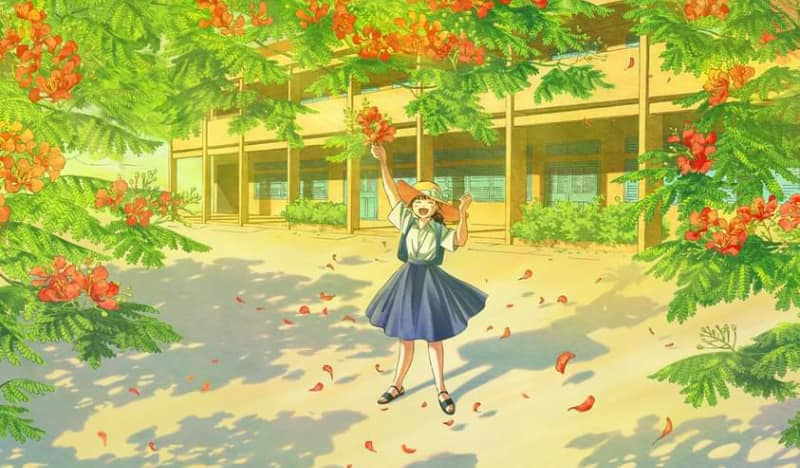
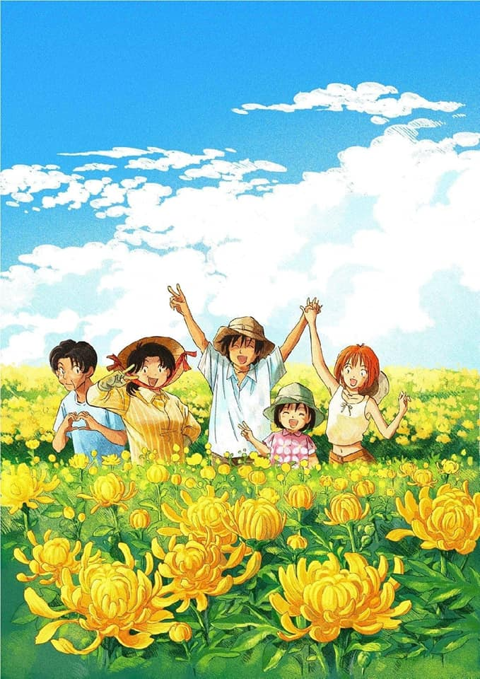
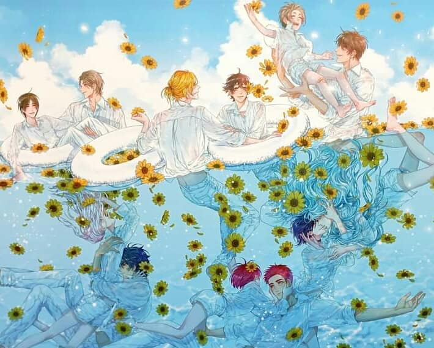
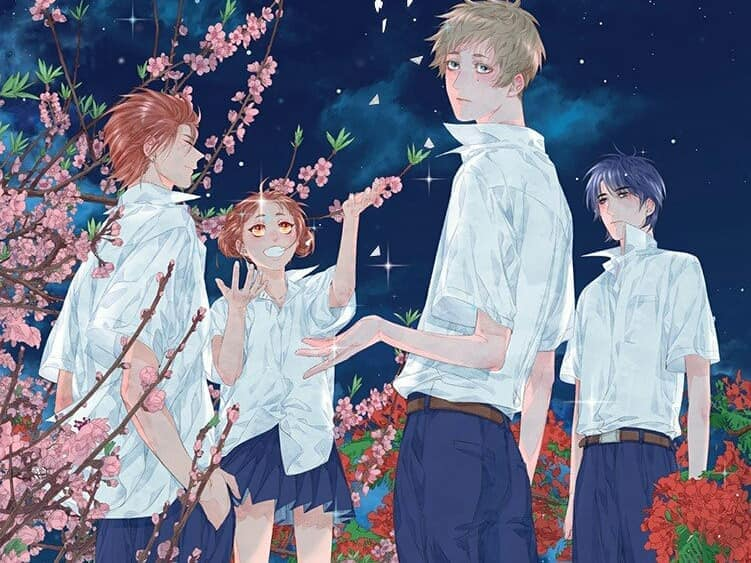
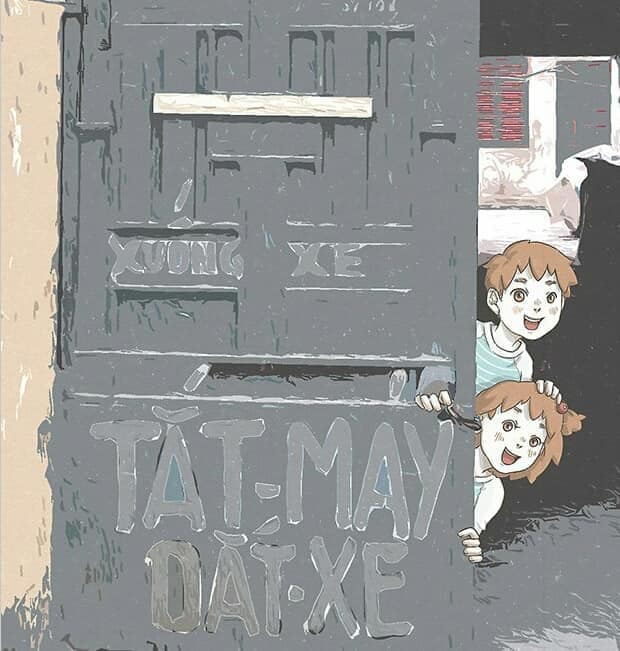

MỤC LỤC
Mùa hè bất tận - Lâm Hoàng Trúc
Đường hoa - Lâm Hoàng Trúc
17 năm ánh sáng (Housemates) - Zen
Xanh nửa đêm - Zen
Twins: Con nhà lính - RED
Mùa hè bất tận - Lâm Hoàng Trúc
Câu chuyện kể về năm lớp 9 của đôi bạn cùng tên Phương, cùng nhau trải qua một năm học nhiều biến động với những áp lực học tập, đối mặt với những đổ vỡ trong gia đình. Hoàn cảnh tuy có khác nhau nhưng chúng đều có điểm chung là phải gánh chịu những sai lầm của người lớn, sống trong cô đơn và không phương hướng.
Truyện mới ra mắt hồi tháng 6/2021, hơn 3.000 bản của bộ truyện đã được người hâm mộ đặt mua trước. Truyện do Công ty TNHH Văn hóa & Truyền thông Du Bút phát hành.

Đường hoa - Lâm Hoàng Trúc
Truyện kể về Trung, một sinh viên Mỹ thuật sau khi tốt nghiệp đã có một sự nghiệp ổn định tại thành phố. Thế nhưng đột nhiên một ngày nọ, anh quyết định về quê, vứt bỏ hết tất cả hoài bão một thời.
"Đường hoa" là tập truyện đầu tiên của Lâm Hoàng Trúc, phát hành năm 2018 bởi NXB Kim Đồng. Lâm Hoàng Trúc sinh năm 1991 tại Tiền Giang, từng tốt nghiệp ĐH Kiến trúc TP HCM, ra trường chuyển hướng sáng tác truyện tranh.

17 năm ánh sáng (Housemates) - Zen
Đây là tuyển tập những câu chuyện ngắn do tác giả Zen sáng tác, là những câu chuyện về một thế giới khác - nơi tất cả nhân vật có được một kết thúc có hậu hơn và có cơ hội để gặp gỡ lẫn nhau. Truyện do Zgroup và NXB Dân Trí phát hành lần đầu năm 2017.
Twins: Con nhà lính - RED
Đêm hôm ấy... có vầng trăng nửa đầy nửa vơi, có kẻ thẫn thờ, có người nức nở, có phút chia ly, có giờ hội ngộ… "Suốt mười hai năm qua... cậu đã giấu tớ những gì?". Khi bánh răng vận mệnh lặng lẽ quay, cuộc đời của Dương, Thanh, Bảo, Ngọc giao nhau, tạo nên những cuộc ly tán hợp tan của tuổi trẻ, tình bạn và tình yêu. Truyện mới phát hành hồi tháng 4/2021 bởi IPM và NXB Hồng Đức.
Mùa hè bất tận - Lâm Hoàng Trúc
Vũ Anh và Vy Anh, hai nhóc song sinh trong một gia đình nhiều đời là quân nhân, có một tuổi thơ vừa bình thường lại vừa dị thường đến mức dở khóc dở cười. Tác giả RED là một họa sĩ 9x đã 2 lần nhận giải thưởng sáng tác Silent Manga Audition của Nhật Bản và nhiều giải thưởng từ các cuộc thi sáng tác truyện tranh trong nước. Truyện bắt đầu xuất bản tập 1 năm 2018 bởi NXB Kim Đồng.
